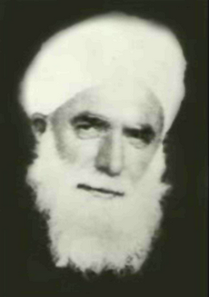

Muhammed Said el-Cezerî [Þeyh Seyda] [1889-1968]

Son asýr Anadolu velîlerinden. Ýsmi Muhammed Saîd olup Þeyh Seydâ diye meþhûr olmuþtur. Babasý Þeyh Ömer Zengânî, annesi Halîme Hâtundur. 1889 (H. 1309) senesinde Cizre’de doðdu. 1968 (H. 1387) senesinde Cizre’de vefât etti. Kabri oradadýr.Muhammed Saîd henüz bir yaþýndayken, babasý Ömer ez-Zengânî hac yolculuðu sýrasýnda 1890 senesinde Cidde’de vefât etti. Küçük yaþta yetim kalan Muhammed Saîd, yedi yaþýna kadar konuþmadý ve yürümedi. Yedi yaþýndan sonra yavaþ yavaþ konuþan Muhammed Saîd Efendi ilim öðrenmeye baþladý. Aðabeyi Þeyh Sirâceddîn Efendiden ilim tahsil etti. Ýlim tahsil ettiði müddetçe hiç evine gitmez, medresede kalýrdý. Medresede kaldýðý zaman geceleri bir hasýrýn içine sarýnarak uyurdu. Annesi Halîme Hâtun oðlunu çok özler, hasretliðine dayanamayarak aðlardý. Muhammed Saîd Efendi annesinin isteði sebebiyle bazen eve giderek ziyâret ederdi. 17 yaþýna geldiði zaman ilim tahsilini tamamlayarak aðabeyi Þeyh Sirâcüddîn Efendiden icâzet aldý. Genç yaþta müderrisliðe baþlayýp talebe okuttu. 23 yaþýna geldiðinde medrese tamamen kendisine kaldý.
Ýlim ve fazîlette emsâllerini geçip zamânýn ileri gelenleri arasýna girdi. Dayýsý Þeyh Muhammed Nûrî Dirþevî’nin sohbetlerinde bulundu. Tasavvuf yolunda ilerledi. Dayýsý onu irþâd için gittiði yerlere beraberinde götürdü. 30 yaþýna gelince dayýsý ve hocasý Þeyh Muhammed Nûrî’nin kýzýyla evlendi. Nihâyet bir müddet sonra Þeyh Muhammed Nûrî hazretleri ölüm döþeðinde yatarken oðullarýný ve halîfelerini yanýna çaðýrarak; "Artýk bundan sonra Þeyhiniz Seydâ’dýr." buyurarak Muhammed Saîd Efendiyi yerine vazifelendirdi.
Þeyh Seydâ bu sýrada 40 yaþýnda bulunuyordu. Medresede talebe okutmasýnýn yaný sýra, hizmetinde bulunanlara ve insanlara Ýslâmiyetin emir ve yasaklarýný anlatarak onlarýn iki cihan saâdetine kavuþmalarý için gayret ediyordu. Kendisinden icâzet almýþ, 150′ye yakýn talebesi ve ayrýca 100 kadar halîfesi vardý. Talebeleri ve halifelerini Sûriye, Irak, Arabistan gibi memleketlere gönderdi.
Þeyh Seydâ hazretleri tasavvuf yolunda zaman zaman Cezbeye kapýlýrdý. Bu cezbe sýrasýnda bazen kýþýn dondurucu soðuðunda Dicle’ye iner nehrin buzlarýný kýrarak içeri sarkar ve saatlerce öyle kalýrdý. Bazen de yazýn kavurucu sýcaðýnda soba yaktýrýrdý.
Þeyh Seydâ hazretlerinin vücûdu çok yumuþaktý. Elini öpenler sanki ellerinde hiç kemik yok zannederlerdi. Orta boylu ve þiþmanca idi. Küçüklüðünden beri kimse yüzüne bakamazdý. Þeyh Seydânýn yüzüne bakan kimse anlayamadýðý bir hisle ürperir ve vücudunu bir titreme kaplardý.
Þeyh Seydâ hazretleri, teheccüd (gece) namazlarýna devam ederdi. Güzel sözleri ve örnek ahlâkýyla insanlara yol gösterirdi. Sohbetinde bulunan en âsî insanlar dahi onun duâsý bereketiyle, hallerine piþman olup hidâyete kavuþurlardý. Bir sohbeti sýrasýnda buyurdu ki:
“Dil ve kalbin bozukluðuna sebep olan cehâleti terk ederek ilim ile meþgûl olunuz. Takvâ ile bu ilminizi aydýnlatarak ay ve güneþ gibi parlayýnýz. Ýlmin zamaný ve erbâbý geçmiþtir demeyiniz. Ýlmi sâlih amellerle tamamlarsanýz elde ettiðiniz nurla þark ve garbý aydýnlatýrsýnýz. Nerede altýn sâhipleri! Nerede altýn ve gümüþü toplayanlar. Onlarýn hepsi gittiler. Nerede dünyâ malý için çalýþýp çabalayanlar? Ey kardeþlerim gözlerinizi açýp ibretle bakýnýz! Altýn gümüþ toplamak ve dünyâ malý elde etmek için didinenler, yanaklarý çürüten topraða girdiler. Nerede seslerini yükseltenler ve hak dâvâ uðruna kan akýtanlar? Ay ve güneþ gibi safâda bulunanlar. Nerede gece gündüz çalýþýp süslü köþkler yapanlar. Nerede onlar! Hiç bir göz onlarý görmüyor. Onlar tamamiyle öldüler.
Sevgili kardeþlerim ibretle bakýnýz ve hüsrandan kendinizi kurtarýnýz. Size hak nasihati bildirenleri can kulaðýyla dinleyiniz. Tâ ki gözleriniz doysun. Ya Rabbî! Fazlýnla, rahmetinle bizi affet. Bizleri baþkasýna býrakmadan kurtar. Çünkü kurtardýðýn kiþi Cennet’te seâdete kavuþacaktýr. Yâ Rabbî kâinâtýn Efendisine, âl ve ashâbýna salât, selâm ve duâlar olsun. Hamd, kâinâtý yaratan Allahü teâlâya mahsustur”.
Kaba ve sert darvanýþlardan þiddetle sakýnan Þeyh Seydâ yumuþak davranýrdý. Ýnsanlara Ýslâmiyetin emir ve yasaklarýný anlatma yolunda çeþitli sýkýntýlara ve hakâretlere mârûz kaldýðý halde, onlara tatlý bir dille ve yumuþak bir edâyla muâmele ederdi. Nitekim kendisini tutuklamaða gelen askerleri hoþ davranýþýyla yola getirmiþ ve nicelerinin de kendisine talebe olmasýný saðlamýþtý. Allahü teâlâ ona olgunluk ve cemâl yâni yüz güzelliði ihsân etmiþti. Sohbetinde bulunan herkes onun cemâline bakmaktan sohbetinden ayrýlmak istemezdi. Onun üstünlüðünü duyan herkes kâfile kâfile ziyâretine gelir, Þeyh Seydâ onlarý þefkat ve merhametle karþýlar, baðrýna basardý.
Þeyh Seydâ hazretleri fakirlere karþý gayet merhametli ve þefkatli davranýrdý. Onlara dâimâ yardým ederdi. Birgün bir köyün ileri gelenlerinden biri gelerek; “Þu iþim olursa, falanca arâziyi sana hibe edeceðim.” dedi. Þeyh Seydâ hazretlerinin duâsý bereketiyle iþi oldu. O kimse, vâdettiði arâziyi Seydâ’ya baðýþladý. Þeyh Seydâ hazretleri de arâziyi Cizre’nin fakirlerine paylaþtýrdý.
Þeyh Seydâ’nýn asýl gâyesi talebe toplamak olmayýp insanlara yol göstermek ve onlarý ýslâh etmeye çalýþmaktý. Onun için önemli olan insanlarýn ýslâh olmalarýydý. Bu hususta þöyle buyururdu: “Zamânýmýzýn bâzý þeyhleri, köy aðalarýnýn etbâ toplamaya çalýþtýðý gibi, talebe toplamaya çalýþýyorlar. Halbuki gâye, mürîd toplamak deðil insanlarý ýslâh etmek, onlarýn nefsin ve þeytanýn kötülüklerinden kurtulmalarýna yardýmcý olmaktýr.”
Þeyh Seydâ hazretleri cömert ve ihsân sâhibi olup, ziyâretine gelen binlerce insana yemekler yedirir, fakir zengin ayýrt etmeden herkese ayný ilgiyi gösterirdi. Ayrýca devamlý dergâhýnda bulunan yüzden fazla âmâ, sakat, çaresiz ve düþkünlere yemek yedirir, onlarýn kalblerini aslâ kýrmaz ve incitmezdi. Kendisine eziyet edenleri affeder, kimseye kin beslemezdi. Çünkü o her hareketiyle ve davranýþýyla Resûlullah’ý (S.A.V) örnek alýrdý. Hattâ hakkýnda konuþan kimselere duâ ederdi. Sabýr ve tevâzû sâhibi olan Þeyh Seydâ, nefsini herkesten aþaðý görür ve onlardan duâ isterdi. Hemen herkese; “Siz benim büyüðümsünüz. Ben ise sizin küçüðünüzüm” derdi. Fakir ve düþkün kimselerle oturur, onlarla yemek yer ve herkese de böyle yapmalarýný tavsiye ederdi. Bir gün üstü baþý daðýnýk bir kýyâfetle ziyâretine gelen bir hamalýn yük taþýmak için sýrtýnda gezdirdiði ipi öperek helâl kazancýn ehemmiyetine ve teþvikine iþâret etti ve; “Allah için tevâzû edeni Allahü teâlâ yükseltir.” hadîs-i þerîfini okudu.
Ýlim ve irfânda yüksek bir derece sâhibi olan ve büyük bir velî olan Þeyh Seydâ hazretlerinin pekçok kerâmetleri görüldü. Ýbrâhim Ay adýndaki bir kimse þöyle anlattý: “Ben Þeyh Seydâ’yý ziyârete ilk gittiðimde Pakistan’dan bir zengin gelmiþ, dört gün beklediði halde Þeyh Seydâ’yý görememiþti. Akþam vakti varmýþtým. Sabah oldu. Þeyh Seydâ, erkenden Ýzmit Kaðýt Fabrikasýnýn Müdürünü çaðýrdý. Ýki memuru ile birlikte onlar içeri girince ben kapýda bekledim. Ýsmimle çaðýrýlmadýkça girmemek düþüncesindeydim. Ýsmimi kimseye de söylememiþtim. Baktým Þeyh Seydâ’nýn oðlu Þeyh Muhammed Nûrullah ile beni; “Ýbrâhim Adýyamânî de gelsin!” diye çaðýrtmýþ. Ýçeri girdim. Beni karþýsýna oturttu. Saðýmda Ýzmit Kâðýt Fabrikasý Müdürü, solumda da iki memuru vardý. Bize bîat verdi yâni talebeliðe kabûl etti. Yapacaðýmýz vazifeleri anlattý. Ben kendi kendime; “Önceden duydum ki bu zât Nakþî, Kâdirî ve Rufâî yollarýnýn üçünden de bîat veriyor. Bu nasýl olur?” diye düþündüm. Baþýmý kaldýrýp yüzüne doðru bakýnca, bana bakarak “Evet biz kök olarak Nakþî’yiz. Fakat hem Kâdirî, hem de Rufâîliði vermekle vazîfeliyiz.” buyurarak benim zihnimden geçen soruya cevap verdi.
Molla Muhammed adýnda bir kimse, Þeyh Seydâ hazretlerine; “Kurban! Allahü teâlânýn rýzâsýna nasýl erebiliriz?” dedi. Þeyh Seydâ hazretleri; “Cenâb-ý Allah lutf ederse erersin.” buyurdu. O kimse ayný soruyu ikinci ve üçüncü defa sorunca ayný cevâbý aldý. Dördüncü defa sorunca Þeyh Seydâ hazretleri; “Bana bak Molla Muhammed! Kalbinin üzerindeki paralarý ne zaman yakarsan, iþte o zaman Allah’a erersin.” buyurdu. Görünüþte mütteki bir insan olan Molla Muhammed, parayý çok seviyormuþ. Onun kalbindekileri kerâmet olarak bilip bu þekilde cevap verdi.
Ömrünü Ýslâm dîninin emir ve yasaklarýný öðrenmeye, öðretmeye, insanlara anlatýp onlarýn dünya ve âhirette kurtuluþa ermelerine sarfeden Þeyh Seydâ hazretleri ömrünün sonuna doðru etrafýnda kendisine tâbî binlerce insaný görebiliyordu. 1968 (H. 1387) senesi Ramazan bayramýnda binlerce kiþi onun ziyâretine gelip, bayramýný tebrik etti. Þeyh Seydâ da gelen binlerce insana sevinçle, muhabbetle ve tâzimle mukâbelede bulundu. Bayramýn birinci günü câmiye çýktý, öðle namazýný kýldýrdýktan sonra câmide kaldý. Ziyâretçilerle bayramlaþýp ikindiye kadar onlarla sohbet etti. Kalabalýk bir cemâate ikindi namazýný kýldýrdýktan sonra evine döndü. Yedi gün sonra pazar gecesi evlatlarýna vasiyette bulundu. “Benden sonra þeyhiniz Nûrullah’týr. Çünkü onu hem zâhir ve hem de bâtýnda imtihan ettim. Ýmtihaný baþarýyla kazandý.” buyurdu. Yanýnda bulunan Hacý Muhammed Bûzî’ye evine gitmesi için izin verdi. Yanýnda yalnýzca Hacý Kâsým vardý. Kýbleye karþý namaz kýlýyormuþ gibi oturdu. Kendisinde hiç ölüm alâmeti yoktu. Birdenbire aðzýný açtý yumdu ve sustu. Hacý Kâsým dokunduðunda Þeyh Seydâ hazretlerinin vefat ettiðini anladý ve âilesine bildirdi. Ertesi sabah Molla Süleymân el-Hüseynî gasl ve tekfin iþlerini yürüttü. Sonra binlerce insanýn iþtirâkiyle cenâze namazý kýlýndý ve evine defnedildi. Tâziyesine yakýn ve uzak yerlerden kar, tipi ve þiddetli soðuða raðmen, halifelerinden, talebelerinden onbinlerce insan geldi.
Devlet adamlarý dahi onun üstünlüðünü kabûl ederlerdi. Birgün Cizre kaymakamý, belediye baþkaný, hâkim ve diðer vazîfelilerden bâzýlarý anlaþarak Þeyh Seydâ’yý ziyârete karar verdiler. Serhadlý köyüne ziyârete gittiler. Yolda giderken; “Eðer bu kimse hakîkaten velî ise bize þunu þunu yedirsin.” diye her birisi ayrý ayrý þeyler istediler. Öðleden sonra köye ulaþtýlar. Þeyh Seydâ’nýn evine gittiler. Oturup sohbet etmeye baþladýlar. Bu sýrada yemekler geldi. Ýstedikleri yemekler geldikçe orada bulunanlar biribirlerinin gözüne bakmaya baþladýlar. Yemekler yendikten sonra ikindi vakti girdi. Þeyh Seydâ ziyârete gelenlerden biri hâriç diðerlerine; “Haydi abdest alýn namaz kýlalým.” dedi. Ayaðýnda çizme olan misâfire ise; “Sen dur, senin çizmelerini çýkarman zor olur.” dedi. Namaz kýlýndýktan sonra misâfirler müsâde istediler ve oradan ayrýldýlar. Yolda giderken namaz kýlmayan misâfir dedi ki: “Ben pis idim. Þeyh Efendi, benim durumumu anladý. Bana onun için “Sen dur.” dedi. Yoksa çizmelerimi çýkarýp giymek zor deðildir.” Ekseriya bu þekilde gezmeyi âdet edinen o þahýs, bu hâdiseden sonra kötü hareketini terk etti.
Eserleri:
1) Kitabü Ahkâmü’l-Envât, 2) Ed-Dâbýta fir-Râbýta, 3) Et-Te’lif fit-Te’lif, 4) Et-Tasavvuf, 5) Manzumeler, 6) Tenbîhü’l-Müsterþidî, 7) El-Mecmeu’s-Saðîr.

HATIRALAR
Hicri 1379 yýlýnýn 21 Ramazanýnda, Miladi takvimle 7 Mart 1960 tarihinde Þeyh Seyda Hazretleri kendi dergâhýnýn bulunduðu Cizre'nin Serdahl köyünden, o zaman sebebi anlaþýlmayan manevi bir sýkýntýdan dolayý, müridlerinden olan Alay Komutanýnýn arabasýyla Cizre'nin batýsýna, Mardin'e doðru bir yolculuða çýktý.
Ýki küçük oðlu Ömer Faruk Efendi ve Muhammed Bâki Efendi'yi küçük arabaya aldý. Ýkisinden de daha büyük olan oðlu Muhammed Nurullah ile talebesi ve halifesi Seyyid Ali Fýndýkî'nin oðlu olan Abdurrahman Erzen ve yakýn bazý müridânýn da onlara katýlmalarý suretiyle yola koyulmuþlardýr.
Akþam'a doðru Midyat'a ulaþtý. Oradan da halifesi ve ilimde mücâzý (icazet verdiði talebesi) Seyyid Þeyh Halil Efendi'nin köyü olan, Midyat'a baðlý Serdef'e gittiler. Ramazan'ýn yirmi beþine kadar orada kaldýlar. Son günde, kendisine tahsis edilen odada kimsenin yanýna girmemesini emir buyurdular. O odada tam altý saat yalnýz kaldý. Kimse odaya giremedi. Altý saat sonra birden bulunduðu odadan çýkarak, yola koyulmayý emir buyurdular. Herkes beraberce Midyat'a doðru yola koyuldu.
Midyat'a vardýklarýnda bir müridin evinde mahþeri bir cemaate öðle namazý kýldýrdý. Tam namaz bitmiþti ki, Bediüzzaman Hazretlerinin vefat haberi alýndý. Bunun üzerine cemaate uyarý yapýlarak "Kimse ayrýlmasýn, Bediüzzaman hazretlerinin gýyabi cenaze namaz kýlýnacak" denildi. Þeyh Seyda hazretleri orada gýyabi cenaze namazýný bizatihi kendisi kýldýrdý.
Bundan sonra, halk tarafýndan sebebi ve nereye gidileceði bilinmeyen bu yolculuðu tamamlayarak, tekrar köyü Serdahl'e geri döndü. Sonradan haber duyuldu ki; büyük Üstad Bediüzzaman Said Nursi, Isparta'dan doðuya doðru yola çýkmýþ, Þeyh Seyda'nýn köyünden ayrýldýðý günde Bediüzzaman Hz.leri Urfa'da durmuþ ve Ramazan'ýn yirmi beþinde vefat etmiþti. Bu yüzden de halk arasýnda haber þu þekilde yayýldý. "Þeyh Seyda, Bediüzzaman'ý karþýlamak için acilen ve manevi bir sýkýntý içinde Bediüzzaman'ýn geldiði istikamete gelmiþ. Ancak Bediüzzaman'ýn vefatý üzerine o da bu yolculuða son verdi. Bu yolculuk esnasýnda Bediüzzaman'ýn gýyabi cenaze namazýný kýldýrmakla yetinmek durumunda kalmýþ. Üstad Bediüzzaman'ýn vefatý ve defin haberi gelmeden de geri dönmemiþ." Allah'ýn engin rahmeti üzerlerine olsun. Mekânlarý cennet olsun.
Ramazan bayramýndan sonra Þeyh Seyda hazretlerini Serdahl'de ziyaret ettim, halvethanesinde onun sohbetiyle müþerref olunca, Ramazan ayýnda, hem de kýþ mevsimindeki seyahatinin sebebini sordum. Cevaben dedi ki; "Ben miskin bir kimseyim. Büyük Üstadý, Peygamberlerin babasý Halîl-ur Rahman (1) cezb etti. Allah, Üstad'ý kendi halîli (dostu) olan Halîl-ur Rahman'a ulaþtýrdý. Bizi de dostumuz ve halîlimiz olan Þeyh Seyyid Halîl'e kadar ulaþtýrdý. Lakin büyük Üstad beni kendine doðru cezp edip çekmek ve kendine ulaþtýrmak istedi. Ancak Allah(c.c) bize onunla buluþmayý deðil, belki yalnýz büyük Üstadýn gýyabi cenaze namazýný kýlmayý nasip etti. Olay duyduðunuz gibidir. Bunda þek ve þüphe yoktur."
Þeyh Seyda hazretlerini misafir eden halifesi Þeyh Seyyid Halil Efendi der ki; "Ben o zaman Þeyh Seyda hazretlerinden bu yolculuðun sebebini sorunca dediler ki; "Anladým ki Allah Celle Celâluh, Üstad Bediüzzaman Said Nursi hazretlerini Urfa'ya Ýbrahim Halil'e yöneltince, bizi de Halil Ýbrahim'e (2) yöneltti." (Mektubat-Þeyh Abdüssamed el Fârkini-terc: Ýbrahim Öztürk-s. 116-118-Ýnegöl-2008) [Kaynak: cevaplar.org]
---------------------------------
1: Hz. Ýbrahim (a.s) kastediliyor.
2: Adý geçen Þeyh Halil Efendi'nin babasýnýn adý Ýbrahim idi. Dolayýsýyla Halil Ýbrahim ifadesi, Ýbrahim'in oðlu Halil anlamýna gelir.